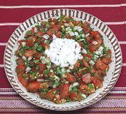

|
Pico de GalloMexico - Pico de Gallo, Salsa Fresca, Salsa Cruda, Salsa Bandera | ||||
| Makes: Effort: Sched: DoAhead: |
1-3/4 # ** 35 min Yes |
A popular fresh salsa of Mexico. It's often used as a table condiment, but being less liquid than other salsas, it is also used in recipes and as a topping for dishes like Huevos Rancheros. | |||
|
5 1 1-1/2 1/2 1/4 3/4 |
oz # c c t |
Onion, white (1) Chili, green (2) Tomatoes (3) Cilantro Lime Juice Salt |
Make - (35 min)
|